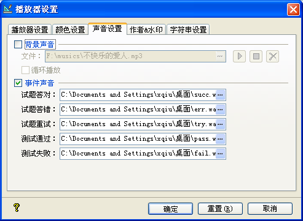

| 播放器 - 声音设置 |
|
声音设置页面如下图所示：  Ø 背景声音 您可以在这里设置您所设计试题的背景声音，支持.mp3及.wav两种音频格式。 文件：您可以在这里选择要设为背景声音的音频文件，并可对它进行试听。 循环播放：此选项决定您加处到试题中的背景声音是否循环播放。若不勾选，加入的背景声音只能播放一次。 Ø 事件声音 您可以在这里设置您所设计试题的一些事件声音，支持.mp3及.wav两种音频格式。 若指定的声音文件不存在，则以播放器默认设置的声音提示。 试题答对：当您的试题设置有[反馈信息]且题做对时，会播放您设定的声音。 试题答错：当您的试题设置有[反馈信息]且题做错时，会播放您设定的声音。 试题重试：当您的试题设置有[反馈信息]，且 设置的[尝试次数]大于1时，当您答错题，会提示您重试；或者在您没有做题就提交试题时，会播放您设定的声音。 测试通过：当您做完整个试题提交后，如果通过测试，会播放您设定的声音；若不设定则没有声音提示。 测试失败：当您做完整个试题提交后，如果没有通过测试，会播放您设定的声音；若不设定则没有声音提示。 |